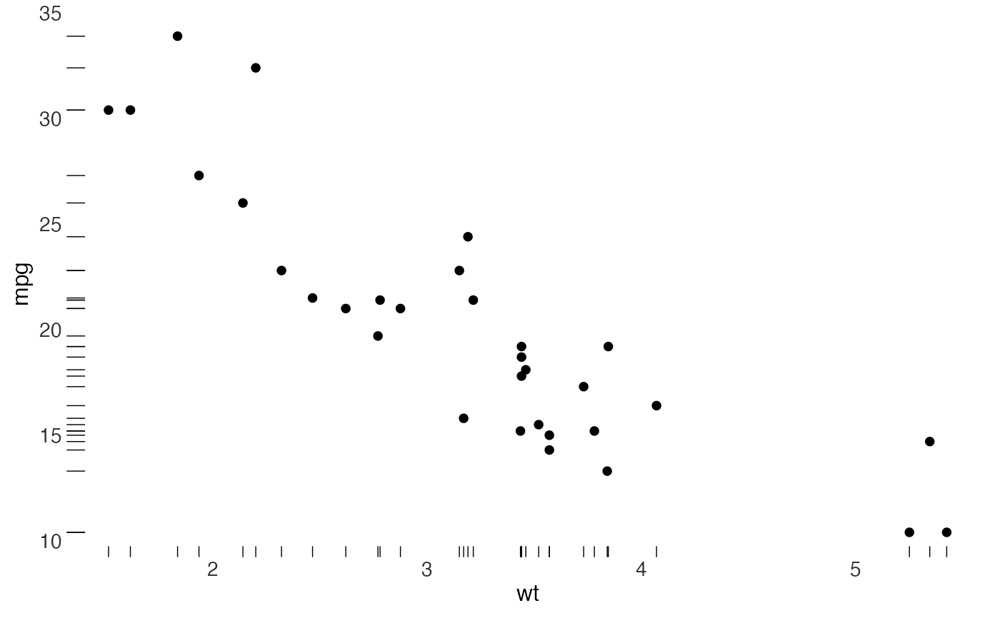

Tufte's dot-dash plot replaces the axis line with the data themselves: a short tick at the location of every observation, on both margins. The reader gets the scatterplot and both marginal distributions from the same ink, and the frame disappears entirely.
Usage
geom_dotdash(
mapping = NULL,
data = NULL,
stat = "identity",
position = "identity",
...,
sides = "bl",
tick_length = grid::unit(0.02, "npc"),
na.rm = FALSE,
show.legend = NA,
inherit.aes = TRUE
)Details
This is a rug, drawn thin and short by default so that it reads as texture rather than as a second set of marks competing with the points.
Examples
library(ggplot2)
ggplot(mtcars, aes(wt, mpg)) +
geom_point() +
geom_dotdash() +
theme_tufte(ticks = FALSE)
